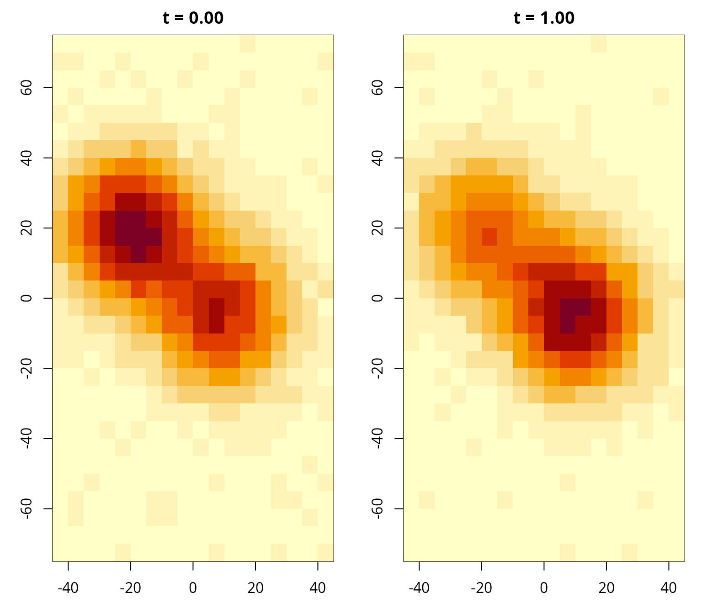
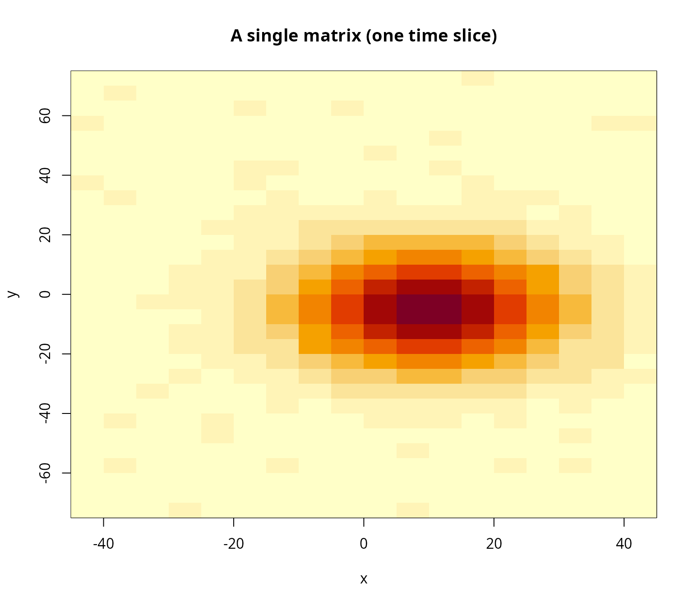
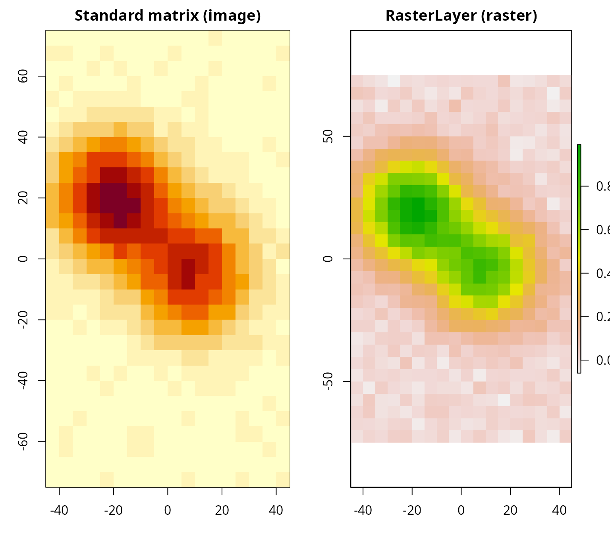
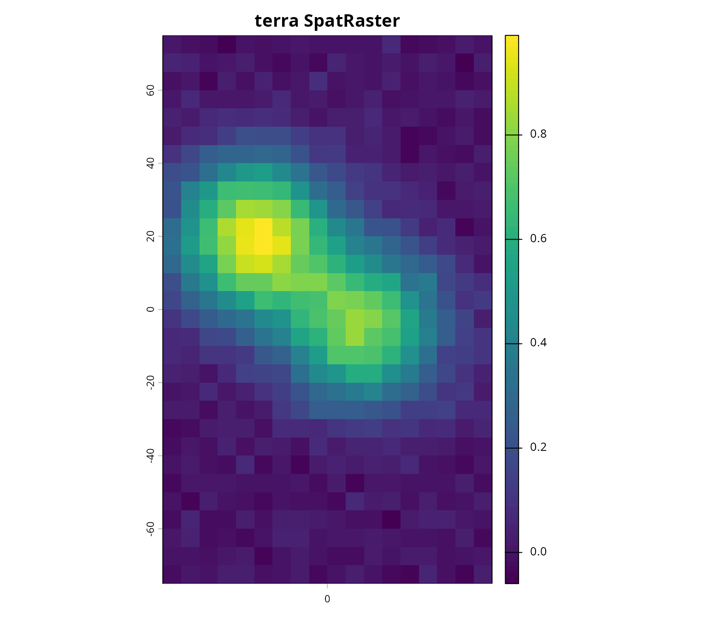

This vignette shows how to prepare gridded
covariates for use with admove. In particular,
it demonstrates how common data structures (matrices, arrays, lists, and
raster objects) can be converted into the standard format expected by
prep_cov().
In admove, covariates (e.g., habitat suitability,
temperature, chlorophyll, depth) are represented as fields on a
regular spatial grid, optionally varying over time. The helper
prep_cov() standardises different input formats into a
single representation used internally by the package.
prep_cov() is designed to accept:
- a numeric matrix (one spatial field, single time slice),
- a numeric array (multiple time slices),
- a list of matrices/arrays (one element per time slice),
- a
RasterLayer/RasterBrick/RasterStack(from raster, if available), - a
SpatRaster(from terra, if available).
The output is an object of class admove_cov (internally
a numeric array) with dimensions corresponding to space and time.
Target data format for all covariates
The standard representation used by admove is a 3D array
cov[x, y, t]
where
- the first dimension indexes x (east–west),
- the second dimension indexes y (north–south),
- the third dimension indexes time.
To support plotting and model setup, it is strongly recommended to provide dimnames for the first two dimensions (and ideally also for time):
-
dimnames(cov)[[1]]: x-coordinates (cell midpoints), -
dimnames(cov)[[2]]: y-coordinates (cell midpoints), -
dimnames(cov)[[3]]: time labels (preferably numeric times or date strings).
How time slices are interpreted
The time vector describes the start of the interval
over which each time slice should be used and corresponds in
admove convention to the time since a origin specified in the
time reference information (admove_tref). For example, if
the time labels are 0 and 1, the slices are
valid for the first and second time steps. To which date 0
corresponds to is specified in tref()$origin and the time
step between 0 and 1 is specified in
tref()$units.
More on that below, for now, we can work with dates,
e.g. 2025-01-01 and 2025-04-01, or decimal
years, e.g. 2025.00 and 2025.25. In this case,
admove uses the first covariate field up to (but not including)
2025.25, and the second field from 2025.25
onward. More generally: each slice is assumed valid from its start time
until the start time of the next slice.
A minimal example in target format
Below we simulate an array of four covariate fields in the target format.
## Set seed for reproducibility
set.seed(1)
## Define grid midpoints
x <- seq(-42.5, 42.5, by = 5)
y <- seq(-72.5, 72.5, by = 5)
## Define start times of time intervals
tvals <- c(0, 1, 2, 3)
## Simulate two smooth "basis" fields
mat1 <- outer(x, y, function(xx, yy) {
exp(-((xx - 10)^2 + (yy + 5)^2) / (2 * 15^2))
}) + matrix(rnorm(length(x) * length(y), 0, 0.02),
nrow = length(x), ncol = length(y))
mat2 <- outer(x, y, function(xx, yy) {
exp(-((xx + 20)^2 + (yy - 20)^2) / (2 * 15^2))
}) + matrix(rnorm(length(x) * length(y), 0, 0.02),
nrow = length(x), ncol = length(y))
## Build a time-varying covariate array as mixtures of mat1/mat2
arr <- array(NA_real_, dim = c(length(x), length(y), length(tvals)))
for (k in seq_along(tvals)) {
p <- runif(2)
arr[, , k] <- p[1] * mat1 + p[2] * mat2 + 0.2 * sin(2 * pi * (k - 1) / length(tvals))
}
## Attach dimnames (note: dimnames are character vectors by definition)
dimnames(arr) <- list(
x = sprintf("%.2f", x),
y = sprintf("%.2f", y),
t = sprintf("%.2f", tvals)
)
## Plot two time slices
par(mfrow = c(1, 2), mar = c(3, 3, 2, 1))
image(x, y, arr[, , 1], main = paste("t =", dimnames(arr)[[3]][1]), xlab = "x", ylab = "y")
image(x, y, arr[, , 2], main = paste("t =", dimnames(arr)[[3]][2]), xlab = "x", ylab = "y")
par(mfrow = c(1, 1))
The array format above is the target. In practice, however,
covariate data often arrive in other layouts. The sections below show
how to use prep_cov() to standardise common input
formats.
Common format A: a single field as a matrix
Some covariates come as a single field that is effectively constant
over time, such as bathymetry or (static) habitat classifications. We
use mat1 as an example:
image(x, y, mat1, main = "A single matrix (one time slice)", xlab = "x", ylab = "y")
You can convert a single matrix using prep_cov():
cov1 <- prep_cov(mat1)As the messages indicate, if mat1 has no row/column
names, prep_cov() must fall back to row/column indices,
which is rarely what you want. In almost all real workflows you should
use the x_centers and y_centers arguments of
the function:
cov1 <- prep_cov(mat1, x_centers = x, y_centers = y)or attach the grid coordinates via rownames() and
colnames():
A 2D matrix is automatically promoted to a 3D array with a singleton
time dimension (i.e., t = 0):
dimnames(cov1)[[3]]
#> [1] "0"Common format B: multiple time slices as a 3D array
Time-varying covariates (e.g., temperature) are often provided as a 3D array whose third dimension is time. This already matches the target representation, so conversion is straightforward:
cov2 <- prep_cov(arr)
summary(cov2)
#> <admove_cov>
#> cells: 540
#> dims: 18 x 30 x 4
#> cellsize: 5 x 5
#> xrange: [-45.00, 45.00]
#> yrange: [-75.00, 75.00]
#> trange: [0.00, 3.00]
#> cov range: [-0.23, 0.99]
#> NAs: 0
#> units: not specified x not specifiedThe third-dimension labels should describe the start time of each interval (e.g., decimal years or date strings). See the section Converting dates to decimal dates below for convenient date parsing.
dimnames(cov2)[[3]]
#> [1] "0.00" "1.00" "2.00" "3.00"Common format C: multiple time slices as a list of matrices
Another common representation is a list where each element corresponds to one time slice. Here we create such a list from the array above:
lst <- lapply(seq_len(dim(arr)[3]), function(k) arr[, , k, drop = FALSE])
cov3 <- prep_cov(lst)
summary(cov3)
#> <admove_cov>
#> cells: 540
#> dims: 18 x 30 x 4
#> cellsize: 5 x 5
#> xrange: [-45.00, 45.00]
#> yrange: [-75.00, 75.00]
#> trange: [0.00, 3.00]
#> cov range: [-0.23, 0.99]
#> NAs: 0
#> units: not specified x not specifiedInternally, the list is converted to a 3D array. If list elements do not have dimnames, add them before conversion so that coordinates and time metadata are carried through correctly.
Common format D: Raster* objects (raster)
Many covariate products are distributed as rasters. If the
raster package is available, prep_cov()
supports RasterLayer objects directly (Hijmans 2025). This section shows a small
example using the simulated data above.
install.packages("raster")
library(raster)
dx <- diff(x)[1]
dy <- diff(y)[1]
## Define raster extent using cell edges (centers +/- half a cell)
r <- raster::raster(
xmn = min(x) - dx/2, xmx = max(x) + dx/2,
ymn = min(y) - dy/2, ymx = max(y) + dy/2,
res = c(dx, dy),
crs = NA
)
stopifnot(ncol(r) == length(x), nrow(r) == length(y))Orientation note (matrix vs raster)
A frequent source of mistakes is that raster objects and R
matrices use different conventions for how the y-axis is
oriented when values are stored as a vector. To ensure the raster
matches the matrix plot you see with image(), we flip the
matrix in the y-direction before assigning values:
mat_topdown <- arr[, , 1][, ncol(arr[, , 1]):1, drop = FALSE]
raster::values(r) <- as.vector(mat_topdown)
par(mfrow = c(1, 2), mar = c(3, 3, 2, 1))
image(x, y, arr[, , 1], main = "Standard matrix (image)", xlab = "x", ylab = "y")
plot(r, main = "RasterLayer (raster)")
par(mfrow = c(1, 1))
Now the raster can be converted directly:
cov_r <- prep_cov(r)
summary(cov_r)
#> <admove_cov>
#> cells: 540
#> dims: 18 x 30 x 1
#> cellsize: 5 x 5
#> xrange: [-45.00, 45.00]
#> yrange: [-75.00, 75.00]
#> trange: [0.00, 0.00]
#> cov range: [-0.06, 0.99]
#> NAs: 0
#> units: not specified x not specifiedIf you prefer not to depend on raster inside your
workflow, you can always convert raster-like objects outside
admove and pass a matrix/array to prep_cov().
Common format E: terra data (SpatRaster)
The terra package is increasingly common for raster
data (GeoTIFF, NetCDF, etc.) (Hijmans
2026). If terra is available, admove
can convert SpatRaster objects directly.
install.packages("terra")
library(terra)
dx <- diff(x)[1]
dy <- diff(y)[1]
t <- terra::rast(
ncols = length(x),
nrows = length(y),
xmin = min(x) - dx/2, xmax = max(x) + dx/2,
ymin = min(y) - dy/2, ymax = max(y) + dy/2,
crs = ""
)
## Use the same orientation adjustment as in the raster example
mat_topdown <- arr[, , 1][, ncol(arr[, , 1]):1, drop = FALSE]
terra::values(t) <- as.vector(mat_topdown)
plot(t, main = "terra SpatRaster")
cov_t <- prep_cov(t)
summary(cov_t)
#> <admove_cov>
#> cells: 540
#> dims: 18 x 30 x 1
#> cellsize: 5 x 5
#> xrange: [-45.00, 45.00]
#> yrange: [-75.00, 75.00]
#> trange: [0.00, 0.00]
#> cov range: [-0.06, 0.99]
#> NAs: 0
#> units: not specified x not specifiedterra time stacks (multi-layer SpatRaster)
Time-varying fields can be represented as multi-layer
SpatRaster objects (one layer per time slice). These can
also be converted by prep_cov().
Common format F: NetCDF data (ncdf4)
Many oceanographic and atmospheric products are distributed as NetCDF
files. These often store variables as arrays with dimensions such as
lon × lat × time (or x × y × time).
prep_cov() does not read NetCDF files directly, but you can
read a variable with ncdf4 and then pass a matrix/array
to prep_cov() (Pierce
2025).
Below we create a small dummy NetCDF file to demonstrate the workflow.
install.packages("ncdf4")
library(ncdf4)
tmpfile <- tempfile(fileext = ".nc")
## Define time stamps as Dates (start of each interval)
t_dates <- as.Date(c("2025-01-01", "2025-04-01", "2025-07-01", "2025-10-01"))
## NetCDF dimensions
dim_x <- ncdim_def("x", "km", vals = x)
dim_y <- ncdim_def("y", "km", vals = y)
## NetCDF time is usually numeric with a units string
time_units <- "days since 1970-01-01"
time_vals <- as.numeric(t_dates - as.Date("1970-01-01"))
dim_t <- ncdim_def("time", time_units, vals = time_vals)
var_cov <- ncvar_def(
name = "cov",
units = "1",
dim = list(dim_x, dim_y, dim_t),
missval = NA_real_,
longname = "dummy covariate"
)
nc <- nc_create(tmpfile, vars = list(var_cov))
ncvar_put(nc, var_cov, arr)
nc_close(nc)Now we read the file, extract coordinates and time metadata, and
attach dimnames in the admove convention
[x, y, t]:
nc <- nc_open(tmpfile)
x_read <- ncvar_get(nc, "x")
y_read <- ncvar_get(nc, "y")
time_read <- ncvar_get(nc, "time") ## numeric days since 1970-01-01
cov_read <- ncvar_get(nc, "cov")
nc_close(nc)
t_read <- as.Date(time_read, origin = "1970-01-01")
dimnames(cov_read) <- list(
x = sprintf("%.2f", x_read),
y = sprintf("%.2f", y_read),
t = format(t_read)
)
cov_nc <- prep_cov(cov_read, date_format = "%Y-%m-%d")
summary(cov_nc)
#> <admove_cov>
#> cells: 540
#> dims: 18 x 30 x 4
#> cellsize: 5 x 5
#> xrange: [-45.00, 45.00]
#> yrange: [-75.00, 75.00]
#> trange: [0.43, 39.43]
#> [2025-01-01 00:11:52
#> 2025-10-01 18:11:52]
#> cov range: [-0.23, 0.99]
#> NAs: 0
#> units: not specified x weekNotes on real NetCDF files
Real products often use different dimension names and orders, e.g.
lon × lat × time, time × lat × lon, or include
additional dimensions such as depth. In those cases you typically need
to:
- identify which dimensions correspond to x/lon and y/lat,
- select/aggregate over depth (if present),
-
permute the array into
[x, y, t]usingaperm().
For example, if the array were [time, y, x], you would
do:
and then attach
dimnames(cov_xy_t) <- list(x=..., y=..., t=...) before
calling prep_cov() or use the arguments
x_centers, y_centers and
times.
Other functionality of prep_cov()
Converting date strings and decimal years to numeric time
If the third dimension uses date strings, prep_cov() can
parse them via date_format and date_origin and
convert them to a numeric time scale (e.g., weeks since origin) used
internally.
For example, monthly fields labelled as
"YYYY-MM-DD":
months <- c("2020-01-01", "2020-04-01", "2020-07-01", "2020-10-01")
arr_month <- array(NA_real_, dim = c(length(x), length(y), length(months)))
for (k in seq_along(months)) {
arr_month[, , k] <- mat1 + 0.1 * k
}
dimnames(arr_month) <- list(
x = sprintf("%.2f", x),
y = sprintf("%.2f", y),
t = months
)
cov_month <- prep_cov(arr_month, date_format = "%Y-%m-%d")
dimnames(cov_month)[[3]]
#> [1] "0.428571428571429" "13.4285714285714" "26.4285714285714"
#> [4] "39.5714285714286"Specifying time reference information
The time reference information is important as it stores the origin
to which time 0 corresponds to and the units that defines
if 1 corresponds to one day, week, month, year, etc.
For that reason, prep_cov() includes the
tref argument that allows specifying these important
variables. For example, we can prepare the covariate fields from above
with the corresponding tref information by
Now, the numeric values in dimnames(cov2)[[3]] cannot be
misinterpreted any longer as the time reference information is
clear:
tref(cov2)
#> $origin
#> [1] "2020-01-01 CET"
#>
#> $units
#> [1] "quarter"
#>
#> $period
#> [1] 4
#>
#> attr(,"class")
#> [1] "admove_tref"This information is also provided in the summary:
summary(cov2)
#> <admove_cov>
#> cells: 540
#> dims: 18 x 30 x 4
#> cellsize: 5 x 5
#> xrange: [-45.00, 45.00]
#> yrange: [-75.00, 75.00]
#> trange: [0.00, 3.00]
#> [2020-01-01 00:00:00
#> 2020-09-30 19:00:00]
#> cov range: [-0.23, 0.99]
#> NAs: 0
#> units: not specified x quarterOf course, the information can also be added after the preparation of the covariate fields:
cov2 <- prep_cov(arr)
cov2 <- add_tref(cov2, list(origin = "2020-01-01",
units = "quarter"))
tref(cov2)
#> $origin
#> [1] "2020-01-01 CET"
#>
#> $units
#> [1] "quarter"
#>
#> $period
#> [1] 4
#>
#> attr(,"class")
#> [1] "admove_tref"If dates or decimal years are provided rather than a numeric value,
prep_cov() will try to infer the time reference
information. For example, for the cov_nc and
cov_t_stack the information was inferred from the data:
Nevertheless, we recommend to specify tref for covariate
fields explicitely.
If the tref information was not inferred correctly, the
shift_tref() and scale_tref() functions allow
to correct the information:
cov2 <- shift_tref(cov2, origin = "2024-01-01")
cov2 <- scale_tref(cov2, units = "month")Now, the covariate fields corresponds to months starting in January 1st 2024:
tref(cov2)
#> $origin
#> [1] "2024-01-01"
#>
#> $units
#> [1] "month"
#>
#> $period
#> [1] 12
#>
#> attr(,"class")
#> [1] "admove_tref"Specifying space reference information
Similar to the time reference information, the spatial information of
the gridded covariate fields also refers to a certain coordinate system
(CRS) and units. Therefore, the covariate fields also contain a
sref object. However, in contrast to the time reference
information, there is no way to infer the CRS and unit from the position
information alone. Thus, if not specified (default), the information is
just NA:
sref(cov2)
#> $crs
#> [1] NA
#>
#> $units
#> [1] NA
#>
#> $crs_scale
#> [1] NA
#>
#> attr(,"class")
#> [1] "admove_sref"Therefore, it is recommended to specify the spatial reference system
by either using the sref argument of
prep_cov():
cov2 <- prep_cov(arr,
tref = list(origin = "2020-01-01",
units = "quarter"),
sref = list(crs = 4326))
sref(cov2)
#> $crs
#> [1] "GEOGCRS[\"WGS 84\",\n ENSEMBLE[\"World Geodetic System 1984 ensemble\",\n MEMBER[\"World Geodetic System 1984 (Transit)\"],\n MEMBER[\"World Geodetic System 1984 (G730)\"],\n MEMBER[\"World Geodetic System 1984 (G873)\"],\n MEMBER[\"World Geodetic System 1984 (G1150)\"],\n MEMBER[\"World Geodetic System 1984 (G1674)\"],\n MEMBER[\"World Geodetic System 1984 (G1762)\"],\n MEMBER[\"World Geodetic System 1984 (G2139)\"],\n MEMBER[\"World Geodetic System 1984 (G2296)\"],\n ELLIPSOID[\"WGS 84\",6378137,298.257223563,\n LENGTHUNIT[\"metre\",1]],\n ENSEMBLEACCURACY[2.0]],\n PRIMEM[\"Greenwich\",0,\n ANGLEUNIT[\"degree\",0.0174532925199433]],\n CS[ellipsoidal,2],\n AXIS[\"geodetic latitude (Lat)\",north,\n ORDER[1],\n ANGLEUNIT[\"degree\",0.0174532925199433]],\n AXIS[\"geodetic longitude (Lon)\",east,\n ORDER[2],\n ANGLEUNIT[\"degree\",0.0174532925199433]],\n USAGE[\n SCOPE[\"Horizontal component of 3D system.\"],\n AREA[\"World.\"],\n BBOX[-90,-180,90,180]],\n ID[\"EPSG\",4326]]"
#>
#> $units
#> [1] "degree"
#>
#> $crs_scale
#> [1] 1
#>
#> attr(,"class")
#> [1] "admove_sref"or by adding the sref afterwards:
cov2 <- prep_cov(arr,
tref = list(origin = "2020-01-01",
units = "quarter"))
cov2 <- add_sref(cov2, list(crs = 4326))
sref(cov2)
#> $crs
#> [1] "GEOGCRS[\"WGS 84\",\n ENSEMBLE[\"World Geodetic System 1984 ensemble\",\n MEMBER[\"World Geodetic System 1984 (Transit)\"],\n MEMBER[\"World Geodetic System 1984 (G730)\"],\n MEMBER[\"World Geodetic System 1984 (G873)\"],\n MEMBER[\"World Geodetic System 1984 (G1150)\"],\n MEMBER[\"World Geodetic System 1984 (G1674)\"],\n MEMBER[\"World Geodetic System 1984 (G1762)\"],\n MEMBER[\"World Geodetic System 1984 (G2139)\"],\n MEMBER[\"World Geodetic System 1984 (G2296)\"],\n ELLIPSOID[\"WGS 84\",6378137,298.257223563,\n LENGTHUNIT[\"metre\",1]],\n ENSEMBLEACCURACY[2.0]],\n PRIMEM[\"Greenwich\",0,\n ANGLEUNIT[\"degree\",0.0174532925199433]],\n CS[ellipsoidal,2],\n AXIS[\"geodetic latitude (Lat)\",north,\n ORDER[1],\n ANGLEUNIT[\"degree\",0.0174532925199433]],\n AXIS[\"geodetic longitude (Lon)\",east,\n ORDER[2],\n ANGLEUNIT[\"degree\",0.0174532925199433]],\n USAGE[\n SCOPE[\"Horizontal component of 3D system.\"],\n AREA[\"World.\"],\n BBOX[-90,-180,90,180]],\n ID[\"EPSG\",4326]]"
#>
#> $units
#> [1] "degree"
#>
#> $crs_scale
#> [1] 1
#>
#> attr(,"class")
#> [1] "admove_sref"Sanity checks before modelling
Covariate fields are easy to accidentally transpose or flip. Before fitting a model, it is useful to verify:
- Dimensions: do they match your expected grid resolution?
- Coordinates: are x and y numeric and monotonic?
- Orientation: does increasing y go “up” in plots, and does the covariate appear where you expect it geographically?
- Time alignment: do covariate time slices cover the time range of the tag observations, and are interval start times correct?
A quick practical habit is to plot a known feature (e.g.,
coastline-aligned bathymetry gradients) and confirm it looks correct in
both your original data and the prepared admove_cov
object.
Saving prepared data
To ensure reproducibility, save the prepared object to disk with
saveRDS():
saveRDS(cov2, file = "prepared_cov.rds")Summary
This vignette described the covariate data structures expected by
admove and demonstrated how to convert common input types into
the standard admove_cov representation used internally by
the package.
In practice, most workflows start from either:
- a raster product (GeoTIFF / NetCDF read into terra or raster), or
- a 3D array already close to
[x, y, time].
The key requirements are a regular grid, consistent orientation, and
(ideally) coordinate and time metadata stored as dimnames so covariate
fields can be aligned with tagging observations. Once prepared, standard
methods such as summary() and plot() can be
used for quick inspection (e.g., summary(cov2) or
plot(cov_r)).